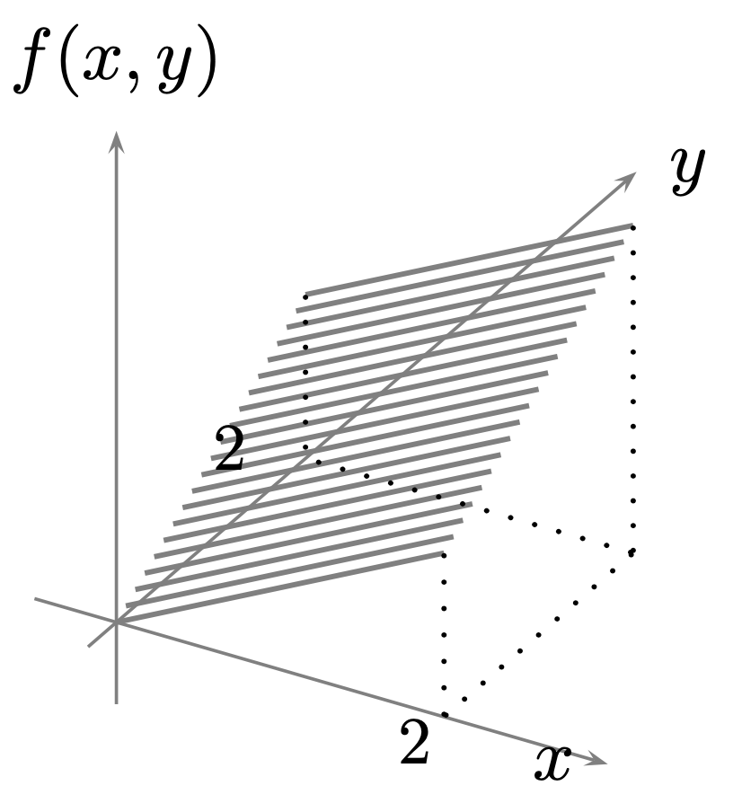

Sean \( X \) y \( Y \) variables aleatorias con función de probabilidad conjunta: $$ f_{X,Y}(x, y) = \frac{2}{n(n+1)}, \quad y = 1, \ldots, x; \quad x = 1, \ldots, n. $$
Sean \( X \) y \( Y \) dos variables aleatorias con función de densidad conjunta dada por:
$$ \displaystyle{ f_{X,Y}(x, y) = y e^{-x}, \quad 0 < y \leq x < \infty }.$$
La función de densidad conjunta de las variables aleatorias \( X \) y \( Y \) está dada por:
$$\displaystyle{ f_{X,Y}(x, y) = x e^{-(x+y)}, \quad x > 0, \quad y > 0 }.$$
La función de densidad conjunta de las variables aleatorias \( X \) y \( Y \) está dada por:
$$\displaystyle{ f_{X,Y}(x, y) = \frac{1}{2} y e^{-x y}, \quad 0 < x < \infty, \quad 0 < y < 2 } $$.
Supón que la variable aleatoria $Y$ tiene distribución Poisson con parámetro \( \lambda >0 \), y que la distribución condicional de la variable aleatoria $X$, dado \( Y = y \), es binomial con parámetros \( y \) y \( p \) con $p>0$, es decir, \( X \mid Y = y \sim \text{Binomial}(y, p) \).
Demuestra que:
Si \( X \) y \( Y \) son variables aleatorias discretas, muestra que \[ \displaystyle{ \sum_x p_{X|Y}(x|y) = 1 } \] para todo \( y \) tal que \( \displaystyle{ p_Y(y) > 0 } \).
Sea lanza una moneda continuamente con probabilidad de obtener cara igual a \( p \).
Sea \( X_1 \) la variable aleatoria que indica el primer lanzamamiento en el que se obtuvo cara,
y \( X_2 \) variables aleatorias geométricas independientes con el mismo parámetro \( p > 0 \).
Encuentra el valor de:
\[
\displaystyle{ P(X_1 = i \mid X_1 + X_2 = n) }
\]
Hint: Supón que una moneda con . Si la segunda cara ocurre en el lanzamiento número \( n \), ¿cuál es la probabilidad condicional de que la primera cara haya ocurrido en el lanzamiento número \( i \), para \( i = 1, \ldots, n-1 \)? Verifica tu suposición analíticamente.
La función de masa de probabilidad conjunta de \( X \) y \( Y \), \( p(x, y) \), está dada por:
\[
\begin{aligned}
&p(1,1) = \frac{1}{9}, && p(2,1) = \frac{1}{3}, && p(3,1) = \frac{1}{9}, \\
&p(1,2) = \frac{1}{9}, && p(2,2) = 0, && p(3,2) = \frac{1}{18}, \\
&p(1,3) = 0, && p(2,3) = \frac{1}{6}, && p(3,3) = \frac{1}{9}
\end{aligned}
\]
Calcula \( \displaystyle{ E[X \mid Y = i] } \) para \( i = 1, 2, 3 \).
En el ejercicio anterior, ¿son \( X \) y \( Y \) variables aleatorias independientes?
Una urna contiene tres bolas blancas, seis rojas y cinco negras. Se seleccionan al azar seis bolas de la urna. Sean \( X \) y \( Y \) el número de bolas blancas y negras seleccionadas, respectivamente. Calcula la función de masa de probabilidad condicional de \( X \) dado que \( Y = 3 \). También calcula \( \displaystyle{ E[X \mid Y = 1] } \).
Repite el ejercicio anterior pero bajo la suposición de que al seleccionar una bola se anota su color y luego se devuelve a la urna antes de la siguiente selección.
Sea \( p(x, y, z) \) la función de masa de probabilidad conjunta de las variables aleatorias \( X \), \( Y \) y \( Z \), dada por:
\[
\begin{aligned}
&p(1,1,1) = \frac{1}{8}, && p(2,1,1) = \frac{1}{4}, \\
&p(1,1,2) = \frac{1}{8}, && p(2,1,2) = \frac{3}{16}, \\
&p(1,2,1) = \frac{1}{16}, && p(2,2,1) = 0, \\
&p(1,2,2) = 0, && p(2,2,2) = \frac{1}{4}
\end{aligned}
\]
Sean \( \displaystyle{X} \) y \( \displaystyle{Y} \) variables aleatorias que representan el número de autos y autobuses, respectivamente, formados en un semáforo en un momento dado. Supón que su función de probabilidad conjunta está dada por la siguiente tabla:
| Distribución conjunta de las v.a. \( X \) y \( Y \) | |||||
|---|---|---|---|---|---|
| \( Y \backslash X \) | 0 | 1 | 2 | 3 | Totales |
| 0 | 0.05 | 0.21 | 0 | 0 | 0.26 |
| 1 | 0.20 | 0.26 | 0.08 | 0 | 0.54 |
| 2 | 0 | 0.06 | 0.07 | 0.02 | 0.15 |
| 3 | 0 | 0 | 0.03 | 0.02 | 0.05 |
| Totales | 0.25 | 0.53 | 0.18 | 0.04 | 1 |
Considera las variables aleatorias $X$ y $Y$ definidas como en el Ejercicio 2.2
Demuestre que la función de densidad condicional \( x \mapsto f_{X|Y}(x|y) = \displaystyle{\frac{f_{X,Y}(x,y)}{f_Y(y)}} \) es efectivamente una función de densidad univariada. En el caso absolutamente continuo, compruebe además que \( \displaystyle{f_{X|Y}(x|y) = \frac{\partial}{\partial x} F_{X|Y}(x|y)} \).
Sea \( X \) con distribución \( \text{exp}(\lambda) \) y sea \( t_0 > 0 \) arbitrario pero fijo. Demuestra que la distribución condicional de \( X - t_0 \), dado que \( X \geq t_0 \), sigue siendo \( \text{exp}(\lambda) \).
Para cada una de las siguientes funciones de densidad, calcula \( \displaystyle{f_{X|Y}(x|y)} \) y \( \displaystyle{F_{X|Y}(x|y)} \):
Calcule las funciones condicionales \( \displaystyle{F_{X|Y}(x|y)} \) y \( \displaystyle{f_{X|Y}(x|y)} \), para las siguientes funciones de distribución conjunta:
Se hacen tres lanzamientos de una moneda equilibrada cuyos resultados llamaremos cara y cruz. Sea \( X \) la variable que denota el número de caras que se obtienen en los dos primeros lanzamientos, y sea \( Y \) la variable que denota el número de cruces en los dos últimos lanzamientos. Calcule \( \displaystyle{f_{X,Y}(x,y)} \), \( \displaystyle{f_X(x)} \), \( \displaystyle{f_Y(y)} \) y \( \displaystyle{f_{Y|X}(y|x)} \) para \( x = 0, 1, 2 \).
Sea \( (X, Y) \) un vector con función de densidad \( \displaystyle{f(x,y) = \frac{x + y}{8}} \), para \( 0 \leq x, y \leq 2 \), con gráfica como se muestra enseguida

Compruebe que \( f(x,y) \) es una función de densidad y calcule: